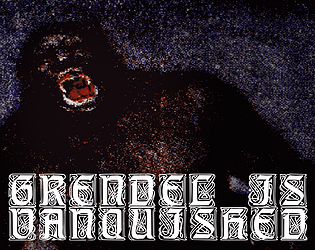
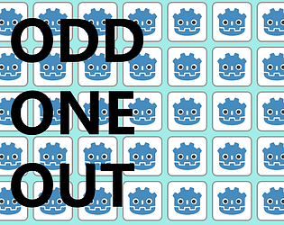
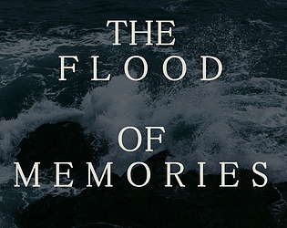
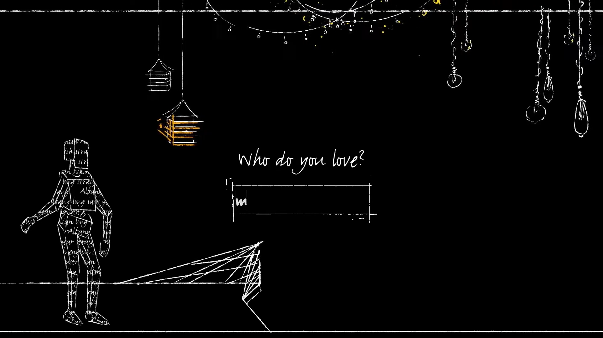

Game Jams
These are some projects I did for game jams (some of them self-imposed)

Grendel is Vanquished
- Submission for Godot Wild Jam with the theme 'Folklore'
I wanted it to be visually appealing and evocative through bold use of colour and texture, a symbolic version of the world, and a stylised depiction of Grendel himself, all assisted by interesting camera framing. Onto this, I added narration of the section of poetry the game covers, and created a simple game mechanic of simply frantically running through this world until Grendel slows and collapses.
I think there is room for improvement in this game jam project, but I am happy with the evocative and simple experience I created here.

SFC-42: "The Seance Machine"
- Personal challenge to make a game within a week. The theme is 'Ritual'
The final result of SFC-42 is an atmospheric little experience with an engaging mechanic and story. I think the theming of this one works particularly well to elevate the game's experience, and I'm especially proud of this game as one made in a week, as I think there's little I would change.


Odd One Out
- Personal challenge to make a game within a week. The theme is 'Find & Click'
Ultimately, this game is even more rushed than a lot of the others, but I am very happy with the main mechanic. It could use some tweaks, but at its core it is an enjoyable and slightly addicting gameplay loop, as you try to out-do your highscore, or those of your friends.


The Flood of Memories
- Personal challenge to make a game within a week. The theme is 'Ten Seconds or Less'
I think it was an evocative idea, and I am particularly proud of the writing of the individual snippets.

Identity
- Submission for Ukie game jam with theme 'Diversity and Inclusivity'
The inclusion of art and music made by my group members results in a short experience that I think lives up to its meditative and introspective goals, with a real focus on making players think about the uniqueness of different people.